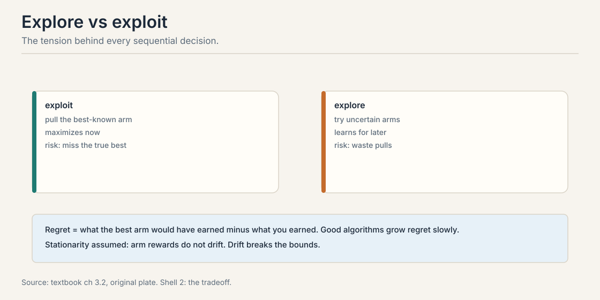
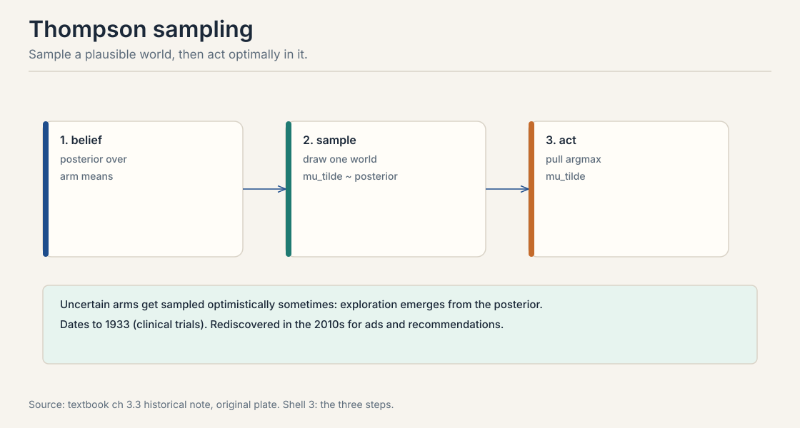
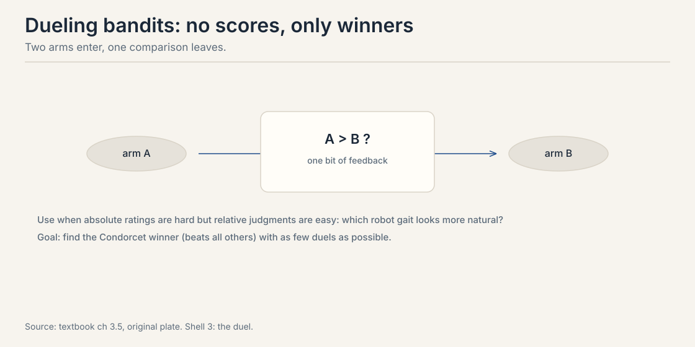
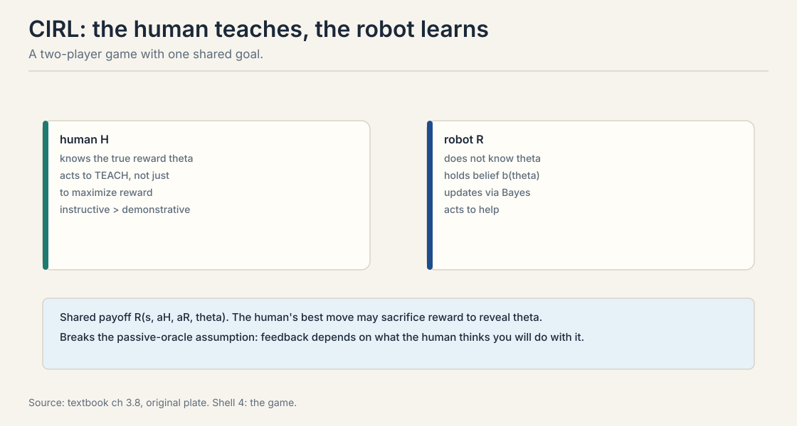

Lecture 6: Bandits, Dueling, and Learning to Act
The problem: choosing is not predicting
Every lesson so far predicted: which item wins, with what probability. Now act. You run a website with two homepage layouts. Each visitor sees one layout. A good layout earns a click with some unknown probability. Your job: maximize total clicks over the next 10,000 visitors.
Prediction alone does not solve this. Knowing layout A clicks at 0.8 and B at 0.5 is the end of the story only if you already know the numbers. You do not. You must learn them by trying, and every try on the worse layout costs clicks. This is the bandit problem: each round you pick an item, an arm, and observe feedback. Item values are fixed but unknown. The goal is total reward over rounds, not a good estimate.
First attempt: always play the current best
The naive policy: try each arm a few times, then play the winner forever. This is pure exploitation. Watch it fail on a toy.
arm A: 8 wins in 10 pulls (observed rate 0.80) arm B: 1 win in 2 pulls (observed rate 0.50)
Greedy commits to A. B gets two pulls and is abandoned. But B’s true rate is barely measured. Model B’s unknown rate with a Beta(2, 2) posterior: 1 win and 1 loss plus a uniform prior. The probability that B’s true rate exceeds 0.80:
Beta(2,2) density: 6x(1-x)
P(theta > 0.80) = 1 - 6[x^2/2 - x^3/3] from 0 to 0.80
= 1 - 6(0.32 - 0.1707)
= 1 - 0.896 = 0.104
About 10%. Greedy has a 1-in-10 chance of locking onto the wrong arm forever, after just 2 pulls of the alternative. The failure is structural: exploitation maximizes now but may miss the true best permanently. Pure exploration has the mirror failure: it keeps pulling known-bad arms and wastes the budget. The tension is exploration versus exploitation, and every algorithm in this chapter is a way to price it.
Regret is the scorecard. It equals what the best arm would have earned minus what you earned. Good algorithms grow regret slowly: logarithmically in the number of rounds, not linearly. One assumption underlies the bounds: stationarity. Arm rewards do not drift. When preferences drift, tastes evolve or models update, the bounds break and algorithms must discount old data.

Exploitation uses current knowledge to maximize immediate reward. Exploration sacrifices immediate reward to gain information for future rounds. Pure exploitation can lock onto a suboptimal arm forever: the toy shows a 10% chance after 2 pulls. Pure exploration wastes pulls on arms already known to be bad. Bandit algorithms balance the two, and regret quantifies how well: the gap between your total reward and the best arm’s. Every regret bound assumes the best arm stays the best. If rewards drift, past observations mislead and the bounds are void. Real systems handle drift by discounting old data with sliding windows or decaying weights, or by detecting change points. Elo’s K-factor does this implicitly: high K forgets fast.
The key question
Can an algorithm explore exactly as much as its uncertainty warrants, no more, no less, without a hand-tuned exploration knob?
Thompson sampling: sample a world, act in it
The textbook’s central algorithm is Thompson sampling from 1933, revived in the 2010s for ads and recommendations. Three steps per round.

- Belief. Hold a posterior over arm means. For the toy: A ~ Beta(9, 3), B ~ Beta(2, 2).
- Sample. Draw one plausible world from the posterior. One draw might give A = 0.75, B = 0.62. Another might give A = 0.72, B = 0.85.
- Act. Pull the best arm in the sampled world.
Exploration emerges automatically. B’s posterior is wide, so B samples high about 10% of the time, and B gets pulled about 10% of the time. Each pull narrows B’s posterior. If B is truly worse, its optimistic draws dry up and the algorithm commits to A. If B is truly better, the pulls reveal it. No explicit exploration bonus is needed. No tuning knob sets the rate.
This is probability matching: each arm is pulled with the probability that it is the best. Uncertainty becomes action probability. The posterior from Lecture 4 is not decoration here. It is the engine.
The posterior encodes uncertainty as width. Sampling from it turns uncertainty into action probability: wide posteriors produce occasional optimistic draws, which trigger pulls, which narrow the posterior. Exploration is probability matching: each arm is pulled with the probability that it is the best. No bonus term, no tuning. With a bad prior or a misspecified model. If the prior rules out the true best arm with zero mass, no amount of sampling finds it. With non-stationary rewards, the posterior concentrates on stale data. Both failures are prior problems, not algorithm problems: the method is only as good as its beliefs.
Dueling bandits: no scores, only winners
Sometimes absolute rewards are unavailable but pairwise comparisons are easy. Which robot gait looks more natural? Which summary reads better? Asking a human to score a gait 7.3 out of 10 is unanchored. Asking which of two gaits looks more natural is stable. The dueling bandit picks two arms per round and observes only the winner.

The goal is the Condorcet winner: the arm that beats every other arm pairwise. Algorithms duel promising candidates against each other and eliminate losers. Sample complexity counts duels, not pulls.
This is the bandit analogue of Lecture 2’s pairwise data, and everything transfers. Bradley-Terry models the duel outcomes. The posterior over utilities drives selection. The same heterogeneity warnings from Lecture 3 apply: a mixed population of judges produces compromise winners.
Preferential Bayesian optimization
Bayesian optimization finds the optimum of an expensive black-box function with few evaluations. The preferential version handles the human case: you cannot query the function value, only pairwise comparisons. Which of these two designs is better? Which trajectory looks more natural?
A Gaussian process models the latent preference function. Each duel updates the GP posterior through a Bradley-Terry likelihood. The acquisition function picks the next duel by expected information gain. This is Lecture 5’s rule in new clothes: ask where the model is uncertain but a human could answer clearly.
Use preferential BO when comparisons are genuinely easier than ratings, when rating scales are unanchored across evaluators, or when the goal is finding the best option rather than estimating the whole function. When scalar feedback is available and reliable, standard BO needs fewer queries: one number constrains the function more than one comparison bit.
When humans judge differences better than magnitudes. Rating a robot trajectory 7.3 out of 10 is unanchored: one evaluator’s 7 is another’s 9. Saying trajectory A looks more natural than B is stable across evaluators. Preferential BO wins when the rating scale is the problem. It loses when good scalars exist, because each scalar carries more information than one comparison bit. Flexibility about the reward shape. A linear model peaks at corners of the feasible region. A GP with an RBF kernel can express “the moderate middle is best,” which is the common human preference for tuned parameters like speed and angle. The cost is O(n^3) scaling without approximations.
The strategic human: CIRL
Every algorithm so far treats the human as a passive oracle: it answers queries but does not strategize. Real humans do. An annotator may pick the harder example deliberately to teach the system. A user may change behavior based on what they think the system is learning.
Cooperative inverse reinforcement learning (CIRL) models this as a two-player game. The human knows the true reward parameters theta. The robot does not, but holds a belief and updates it. Both share the payoff. The human’s optimal move is not just to demonstrate good behavior but to teach: instructive actions that reveal theta can beat expert demonstrations that merely maximize immediate reward.

The lesson for preference learning: feedback depends on what the human believes you will do with it. Elicitation that ignores this gets gamed. An annotator who suspects the system rewards verbosity writes verbose answers, and you learn verbosity as quality. Mechanism design in Lecture 9 is the other half of the answer.
You misread strategic feedback as sincere. An annotator who suspects the system rewards verbosity writes verbose answers, and you learn verbosity as quality. A user who knows they are being measured changes what they do. CIRL says: model the human as optimizing given their beliefs about you, and design queries that stay informative under that model. It pushes toward teaching-aware elicitation: queries designed so that even a strategic human reveals the most. It also justifies humility about learned rewards: if feedback was strategic, the reward model captures the strategy, not the preference. The inversion problem of Lecture 10 starts here.
RL in one paragraph
Bandits are single-step. Full reinforcement learning adds states: early actions influence later states. The MDP tuple is states, actions, transitions, rewards, discount, and the initial distribution. The objective maximizes expected discounted return. Policy gradients climb it.
This stays brief on purpose. The deep mechanics, PPO, KL control, advantage estimation, belong to CS336 L15. What CS329H adds is the preference framing: in RLHF the reward is not given, it is learned from human comparisons, and every RL step inherits the choice-theoretic assumptions of Lectures 2 and 3. The textbook also develops GRPO, group relative policy optimization, as the modern method connecting policy gradients to Bradley-Terry: advantages computed within groups of sampled responses play the role of pairwise comparisons.
Mapping back: what acting adds to predicting
| Prediction-only pain | Bandit answer | How |
|---|---|---|
| Greedy locks onto the wrong arm | Thompson sampling | Pull each arm with P(it is best); the toy’s 10% gets tested, then resolved |
| Scores are unanchored | Dueling bandits | Two arms per round, one bit; BT models the duels |
| Function values unqueryable | Preferential BO | GP prior, BT likelihood on duels, information gain picks the next pair |
| Humans strategize | CIRL | Model the teacher, not just the oracle; design teaching-aware queries |
The honest price: the world moves
Stationarity underlies every bound here. Tastes evolve, models update, annotators learn the system. When the best arm changes, posteriors concentrate on stale data and Thompson sampling confidently pulls yesterday’s winner. The fix is discounting: sliding windows, decaying weights, change detection. Elo’s K-factor does this implicitly. The second price: regret still grows. Logarithmic is slow, not zero. Exploration always costs something, and the bill is denominated in the very reward you are maximizing.
Recap: the whole lesson on one screen
The story in eight steps. Each step answers the one before it.
- Choosing is not predicting. Two layouts, unknown click rates, 10,000 visitors. Learn by trying. Tries cost clicks.
- Greedy can lock in wrong. A: 8/10. B: 1/2. P(B’s true rate > 0.8) = 0.104. Greedy abandons B with a 10% chance of permanent error.
- Regret is the scorecard. Best arm’s earnings minus yours. Good algorithms grow it logarithmically. Assume stationarity.
- Thompson sampling probability-matches. Sample a world from the posterior, act optimally in it. Wide posteriors earn pulls. No bonus, no knob.
- Duels replace scores. Two arms per round, one winner. Find the Condorcet winner. BT models the outcomes.
- PBO compares, not rates. GP over the latent function, BT likelihood on duels, information gain picks the next pair. Use when ratings are unanchored.
- Humans teach. CIRL: the human knows theta, the robot learns it. Instructive actions beat demonstrations. Strategic feedback needs strategic elicitation.
- The price is drift. Stationarity fails in the wild. Discount old data. Regret grows slowly but never stops.
Official sources and further reading
Official: - Course textbook, chapters 6.x: bandits, Thompson sampling, dueling bandits, preferential BO, CIRL, the GRPO connection.
Further reading: - Thompson (1933): the original sampling paper. - Hadfield-Menell et al. (2016): cooperative inverse reinforcement learning.
Caveats from these sources. The Beta(2,2) toy is worked here from the textbook’s 8/10 and 1/2 example; the 0.104 figure is arithmetic, not a textbook quote. The logarithmic regret claim summarizes standard bandit bounds; constants depend on the algorithm and the gap. The RL section is intentionally brief; mechanics live in CS336 L15.
Connections to the other courses
- CS329H L04: the posterior that Thompson sampling samples from; Elo as the online idea.
- CS329H L05: the information-gain rule reused for duel selection in PBO.
- CS329H L07: RLHF inherits every assumption here; the reward is learned, then optimized.
- CS329H L09: strategic humans need mechanism design; CIRL is the cooperative half.
- CS336 L15: PPO, KL control, and policy gradients in full.
Sources
- NOTESCourse textbook, chapter 3 (Truong, Haupt, Koyejo, 2025)
- SUPPLEMENTTranscript L08: Thompson sampling applied to human experiments